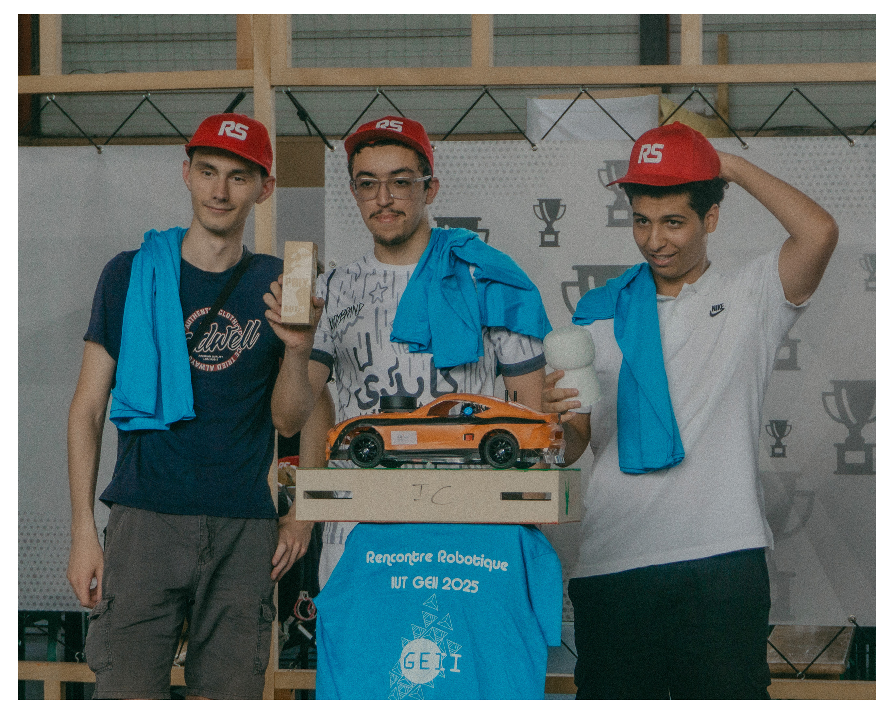

SYSTEMES EMBARQUES · BUT GEII ESE
Mohamed Jibril Samahri
Electronique, robotique, drone, IA et interfaces embarquees
Etudiant en BUT Genie Electrique et Informatique Industrielle, parcours Electronique et Systemes Embarques. Ce portfolio reprend mes projets de formation, mes stages et les travaux recents autour du drone ARODE.

01 - A propos
Profil technique
Mon parcours en GEII m'a progressivement amene de l'electronique de base vers les systemes embarques complets : capteurs, cartes, programmation, robotique, logique numerique, interfaces et integration materielle.
En troisieme annee, mon travail s'est surtout oriente vers les drones intelligents et l'integration systeme : architecture drone, alimentation, communication, flux video, IA de detection et exploitation dans une interface.
// competences.json
- EmbarqueC / C++, Arduino, Raspberry Pi, Jetson, Pixhawk
- LogicielPython, PyQt6, API, IHM, Git
- ElectroniqueMesure, cablage, alimentation, FPGA, I2C, PWM
- DomainesDrone, robotique, vision par ordinateur, IA
02 - Navigation
Parcours par annee
BUT1
Fondamentaux GEII
Mesures, soudure, composants, premiers prototypes et robot suiveur de ligne.
BUT2Robotique, FPGA et stage
Voiture autonome, robot eviteur, regulateur FPGA et premier stage drone.
BUT3Dashboard et stage ARODE
Kart Dashboard Pro V3 et stage de fin de BUT sur une architecture drone.
03 - Projets recents
A mettre en avant

SAE BUT3
Kart Dashboard Pro V3
Application Python / PyQt6 pour afficher des donnees vehicule en temps reel.

Stage BUT3
Architecture drone ARODE
Plateforme X500, Pixhawk, Jetson, SIYI, alimentation et tests progressifs.

Stage BUT2
Detection de victimes par drone
Transmission video, GPS, DJI Mobile SDK, ffmpeg et tests terrain.